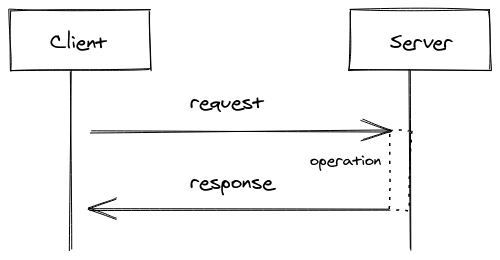
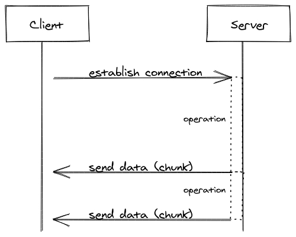

2021-03-02
This document gives an overview about SSE. What is it. When to use. The Terminology.
As the abbr. suggests the concept behind SSE is that the server is sending data asynchronously to client. The connection client-server is done once.
This approach differs from the well-known concept of client-server communication. Where client does a request to a server and the server responses to client. The difference to SSE is that the initiation is done by the client. The client has to request for new data.

Whereas in the SSE concept the server initiates.
The client on the other side should react to the stream of events. It's a kind of broadcast mechanism where clients subscribes to the server events. SSE can be clustered together with Kafka, JMS in the umbrella term reactive messaging.

In order to use SSE in your implementation you need a SSE client API (javascript API, Jersey Client SSE API, Microprofile, ...)